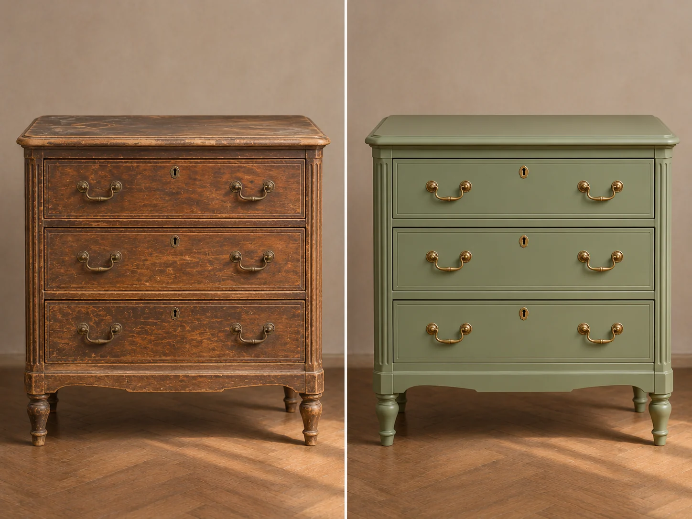
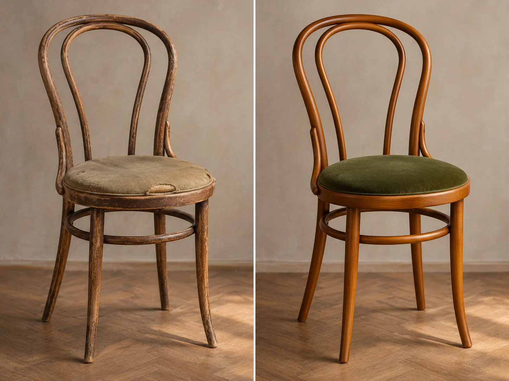
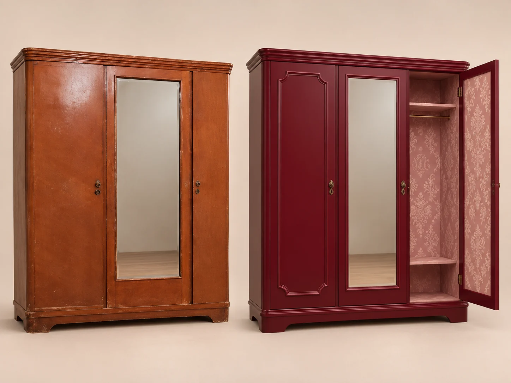
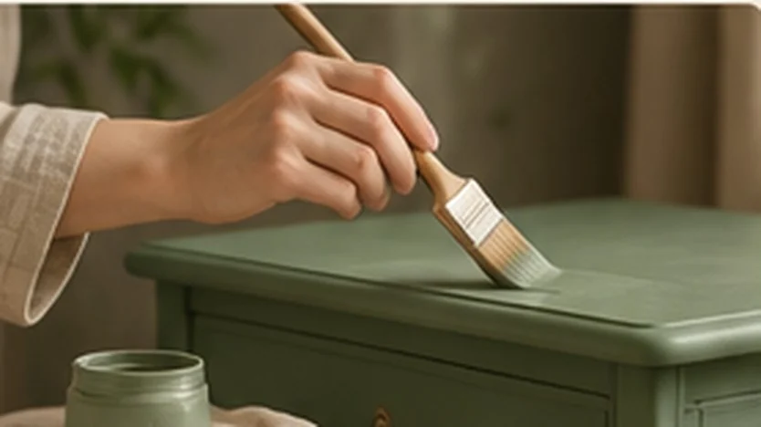

Комодот 12 000 ₽*
Мастерская обновления мебели
У любимой мебели
может быть
новая история
Реставрация, перекраска и обновление мебели с заботой о деталях.
Наши услуги
Перекраска
и смена цвета
и смена цвета
Восстановление
покрытий
покрытий
Ремонт
и укрепление
и укрепление
Замена
фурнитуры
фурнитуры
Декоративная
отделка
отделка
Преображение
До и после
Примеры преображения мебели. Сохраняем характер вещей и возвращаем им красоту и функцию. В галерее представлены концептуальные визуализации.

ДоПосле
ДоПосле
ДоПосле
О мастерской
Сохраняем ценность вещей
FORMA — концепция мастерской, где старым предметам находят новое место в интерьере. Бережное восстановление, краски природных оттенков и внимание к деталям.
Мы верим, что любимую мебель не всегда нужно заменять: иногда ей достаточно нового покрытия, подходящей фурнитуры или деликатной реставрации.
Демонстрационный проект: описание мастерской и примеры работ являются концепцией.
✧Эстетичный подходПодбор цвета и фактуры
◇Качественные материалыПокрытия с учётом назначения
♡Бережная реставрацияСохраняем характер предмета
От идеи до результата
Как мы работаем
01Заявка
Фото мебели и пожелания
02Оценка
Обсуждаем объём работы
03Согласование
Цвет, материалы и сроки
04Реставрация
Работаем с деталями
05Готовая мебель
Завершаем обновление
Ориентиры
Стоимость
работ
Стоимость зависит от состояния мебели, размера, материалов и сложности обработки. Окончательный расчёт — после осмотра.
Примерные цены для демонстрационного сайта, не публичная оферта.Стулот 3 500 ₽*
Шкафот 25 000 ₽*
Полезная информация
Вопросы
и ответы
Можно ли изменить цвет старой мебели?
Да, во многих случаях. Возможность перекраски и подходящее покрытие определяются по материалу и состоянию предмета.
Сколько времени занимает работа?
Срок зависит от объёма реставрации, состояния мебели и выбранной технологии покрытия.
Нужно ли привозить мебель в мастерскую?
Это обсуждается после предварительной оценки. Для реальной мастерской условия доставки устанавливаются отдельно.
Можно ли оценить стоимость по фотографии?
Да, фото и описание позволяют подготовить предварительную оценку. Окончательная стоимость согласуется после осмотра.
Связаться с мастерской
Оценить мебель по фото
Расскажите, что хотите обновить, и приложите фотографии. В подключённой версии форма передаёт заявку в FORMA CRM.
Демо-режим: форма доступна для просмотра. Для реальной отправки подключите Supabase и защиту от спама по README.
FORMA · мастерская
Контакты
Есть вопросы по реставрации или хотите обсудить необычный проект? Напишите нам удобным способом.